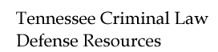

|
 |
[ directories ] [ internet primer ] [ online research ] [ What Is? ]
TnCrimLaw is pleased to host an Online Library that now includes:
A Citizen's Guide On Using The Freedom Of Information Act And The Privacy Act Of 1974 To Request Government Documents
as well as the home pages of the
Tennessee Association of Criminal Defense Lawyers
The Tennessee District Public Defenders Conference
and The Capital Division of the Tennessee Public Defenders Conference
Explanations in every day language - what happens when one is charged with a crime?
The information and resources at this site are provided as a public service and should not be taken as legal advice and are not intended as legal advice.Have a question about this site? Email info@tncrimlaw.com.